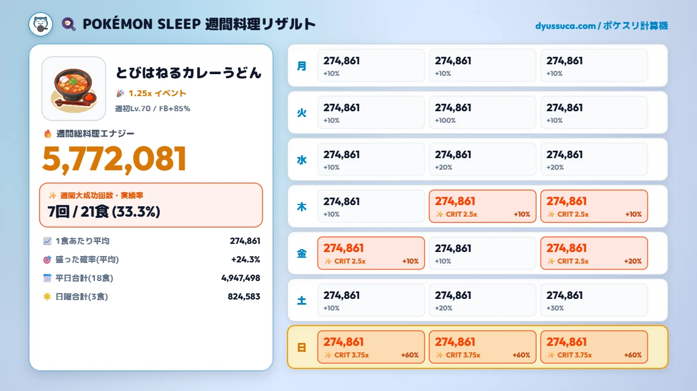

いつも『ポケモンスリープ 備蓄＆調理計算機（dyussuca.com）』をご利用いただきありがとうございます！
今回は新しい機能として、「🍽️ 料理記録」タブを実装・リリースしました！
コンセプトとしては、「1週間、毎食同じ料理を作り続ける人向けの、手軽な料理記録装置」です。
正直に言ってしまうと、途中で複数の違う料理を作るのには現状向いていません（笑）。まずは「1週間、同じ料理を作り続けた上でどうなったか？」を手軽に振り返るための特化設計にしています。もし「週の途中で料理を変えられるようにしてほしい！」という要望が多ければ複数料理の対応も考えますが、まずは1週間の完走ログとして楽しんでもらえれば嬉しいです！
💾 ブラウザを閉じても安心！データは1週間ずっと保持されます
記録したデータはブラウザ（ローカルストレージ）に自動保存されます。
そのため、途中でブラウザを閉じたり数日経ったりしても、データが消えることはありません。自分で「週間記録をリセット」ボタンを押さない限りデータはずっと保持され続けるので、安心して毎食の記録をつけてみてください。
🔍 なぜ「FB」「週初レシピLv」「イベント倍率」を残したのか？
この記録機能は、ユーザーが料理後に出た実際のエナジー数値をそのまま手入力する仕組みになっています。そのため、計算上だけで言えばフィールドボーナス（FB）や週初レベルの入力は必須ではありません。
それでもあえてこの入力欄を残した理由は、「後から見返したときに、自分がどういった条件（FB何％、週初Lv何、イベント倍率の有無）で挑んでいたのかを振り返れるようにするため」です。
FBや週初レベル、イベントの有無さえ分かっていれば、「あ、この週はこれくらい余剰食材を入れてたんだな」というのも後からある程度推察できます。料理に関するパラメータがすっきりと1枚にまとまるので、記録・振り返り用として残しておく価値があると考えました。
🎯 料理チャンス（盛った確率）の自由記述 ＆ 平均集計
各食の大成功確率の入力欄は、自由記述（デフォルトは空欄）にしています。
「料理チャンスS」や「いいキャンプチケット」等でその時々に盛った確率をメモしておけば、「平均して何％盛っていて、実際何回大成功したのか？」が後から綺麗に振り返れます。こちらもぜひ自由に使ってみてください！
🖼️ 画像出力・CSVダウンロード・𝕏共有の使い道
「リザルト画像を保存」ボタンを押せば、レシピ画像、週間の総エナジー、何回大成功したか、各食の記録がひと目でわかる綺麗な画像カード（PNG）としてダウンロードできます。人に共有したり、自分のアルバムに残すのに超便利です！

自分の記録用としてはもちろん、他のデータ分析に使ったり、誰かが複数人の記録を集めてグラフ化・集計するときや、人と競い合ったり共有するときにも優しい形式なので、ぜひ自由に活用してください！
ワンクリックで週間実績のポスト文を生成して𝕏へシェアできます。
（※実は自分自身がまだ𝕏のアカウントを持っておらず完全な実機検証ができていないので、もし不具合や使いにくい点があったら教えてもらえると助かります！）
💬 開発者の小言（あとがき・ポケスリ近況）
ここからはちょっとした開発者の小言なんですが……
実際のところ、今の自分のプレイングやレベルだと、毎食最上級料理を作り続けられるほど食材バッグもポケモンの育成も全然追いついていません（笑）。
ちゃんとこの自作ツールを自分自身でもフル活用できるくらいまでは、料理パーティをしっかり強く育成したいなと思ってます！